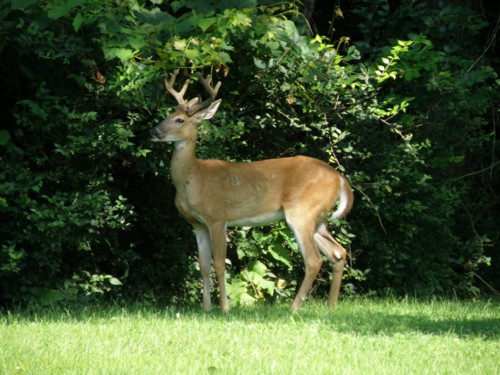

|
Click on any of the titles in the option box below to view the photo:
Crown Hill Cemetery is located at 700 West 38th Street in Indianapolis, Indiana (Marion County). The coordinates are 39° 49' 13" N, 86° 10' 19" W.
Crown Hill Cemetery was established in 1864, and it is still active. It is huge - in fact, it's the third largest cemetery in the country. The cemetery is full of interesting gravestones, and most are in good condition. Many contain beautiful, detailed carvings and statues. The cemetery is very well maintained.
Although there are several notable people buried in Crown Hill Cemetery, there were two in particular that I wanted to see. The first was President Benjamin Harrison, the twenty-third President of the United States of America. The second was John Dillinger, a notorious bank robber during the depression era. He was killed in 1934.
We also encountered several deer in this cemetery. Here are a few photos:

For more information about Crown Hill Cemetery, please visit the official site.
Where do you want to go? Select your destination:
|